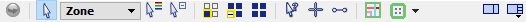
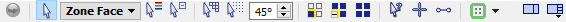
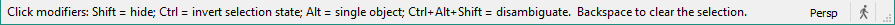

窗格元素
标题栏（title bar） 是窗格最顶部的元素。
工具栏
当窗格处于活动状态时，工具栏会作为主工具栏显示在程序主菜单旁。此外，还可以通过单击标题栏中的窗格菜单按钮并选择“显示工具栏”，在窗格内（紧靠其标题栏下方）显示或隐藏该工具栏。
工具栏所包含的工具集随所选数据类型的不同而不同。
网格单元


网格单元面


各工具的含义如下。
| 图标 | 命令/模式 | 说明/注释 |
|---|---|---|
 |
执行/停止切换按钮 | 执行或停止计算循环；更多信息请参阅 工具栏主题（Toolbar topic）。 |
| 选择模式 | 此工具用于选择和操作对象，是鼠标的默认模式。参见 选择（Selection） | |
| （列表） | 数据类型 | 这是可供使用的数据类型列表。可在此处或在 对象（Objects） 控件组中选择类型。 |
| 消歧器 | 使用消歧器单击对象，以选择按分组选择或隐藏对象时要使用哪个（些）分组。 | |
 |
隐藏模式 | 在此鼠标模式下，单击对象即可将其隐藏。 |
| 按平面选择 | 使用此鼠标模式，单击某个面即可选择由折角所定义平面内的面。 | |
| 按平面隐藏 | 使用此鼠标模式，单击某个面即可隐藏由折角所定义平面内的面。 | |
| （度） | 折角 | 此折角定义选择和隐藏面时要使用的平面。 |
 |
仅显示选中对象 | 选择一个或多个对象后，单击此工具可隐藏所有未选中的对象。 |
| 隐藏选择 | 单击此项可取消选择并隐藏当前选择。 | |
| 全部显示 | 单击此按钮可使当前类型的所有对象可见。 | |
| 显示详情 | 使用此鼠标模式，单击对象即可查看其详细信息。 | |
| 使视图居中于对象 | 使用此鼠标模式，单击对象即可使视图以该对象为中心。 | |
 |
测量距离 | 在此模式下，在一个或多个对象上单击两个点，即可测量这两点之间的距离。 |
| 表皮 | 自动将分组名称添加到模型中的面上。 | |
| 操作 | 此工具显示其列表中最近使用过的操作的图标。可以单击该图标执行该操作，也可以从下拉列表中选择其他操作。 | |
 |
显示/隐藏 控制面板 | 切换 控制面板 的显示。有关详细信息，请参阅 工具栏主题（Toolbar topic）。 |
 |
显示/隐藏控件组 | 此按钮显示一个菜单，其中列出此窗格可用的控件组；选择未勾选的项可在控制面板中显示它；选择已勾选的项则会隐藏它。有关详细信息，请参阅 工具栏主题（Toolbar topic）。 |
视图操作
- R 键和 Ctrl+R 键的作用与在绘图窗口中相同，用于重置视图
- 按住鼠标右键可旋转视图
- 鼠标滚轮可放大和缩小视图
- 按住鼠标右键后再按住鼠标左键，可向上/下/左/右拖动视图；或将 Shift 键与鼠标右键配合使用
有关详细信息，请参阅 视图操作快速参考（View Manipulation Quick Reference）。
ESC 键
通常，ESC 键会取消当前操作，并使鼠标返回选择模式。
状态栏
主窗口的状态栏显示与模型窗格相关的控件和信息。


状态栏右侧的 Persp 指示器显示当前使用的渲染模式：透视还是平行。单击该指示器可切换模式（或按 P 键）。
状态栏角落旁的指示器显示当前导航处于常规模式还是第一人称模式。使用常规导航时，鼠标滚轮会向视图中心点或鼠标所指对象上的位置缩放。在第一人称模式下，鼠标滚轮会像在模型中行走一样调整视图。要使用第一人称导航，请在使用鼠标滚轮时按住 Alt 键。


图 2：第一人称导航。
| 这些内容对您有帮助吗？… | FLAC3D © 2019, Itasca | 原文更新于 2020 年 10 月 8 日 |